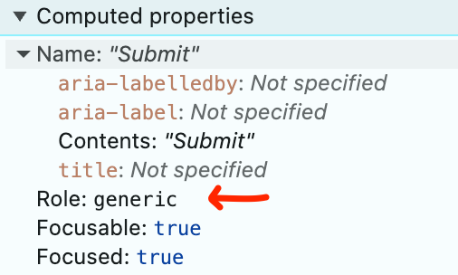

4.1.2 Name, Role, Value (A)
What WCAG says:
“For all user interface components … the name and role can be programmatically determined; states, properties, and values that can be set by the user can be programmatically set; and notification of changes to these items is available to … assistive technologies.”
Understanding 4.1.2 Name, Role, Value
What this means
All interactive components must have a name, role and (where applicable) a value or state that are communicated to assistive technologies. For example:
- Name: “What is your first name?”
- Role: textbox
- Value: “Victoria”
HTML (Hypertext Markup Language) components such as links, buttons and checkboxes already have a role, and make it easier to apply names and values.
ARIA (Accessible Rich Internet Applications) is another common method to convey names, roles and values to assistive technologies - this is done by adding attributes to HTML tags. However, the first rule of ARIA is not to use it - unless there is no HTML alternative.
Why it matters
An accessible name, role and value are vital to ensure that assistive technology users can identify and use interactive components.
For example:
- A speech recognition user might use the commands “click Search” or “click button”. If the accessible name is not provided then that action will be much more difficult.
- A screen reader user needs to understand whether a checkbox to sign them up for marketing is checked or not.
How to check
Use a screen reader to read and operate each interactive component on screen. Alternatively, check the accessible name, role and value using your browser’s developer tools.
Check that a name and role, and value or state (where applicable), are conveyed to assistive technologies.
An automated tool such as Axe or WAVE is also likely to detect many failures of this success criterion.
How to test in detail for 4.1.2 Name, Role, Value
Good example
A radio button has the following properties which are read out by a screen reader, passing Name, Role, Value:
- Name: England
- Role: Radio button
- State: Selected
- Sample screen reader output: “Now in, What is the principal place of business? England, selected, radio button, 1 of 5”
The radio buttons are created using standard HTML with the name coming from a <label> tag. The grouping of “What is your principal place of business” is also read to screen reader users, due to a correctly coded legend.
Common mistakes
A button with no accessible name
A “close window” button with a picture of a cross but no accessible name:
Without an accessible name, a screen reader will simply say “button” and a speech recognition user is likely to be unsuccessful in closing the window - for example “click close” will not work.
The button needs an accessible name, for example, “Close window”.
A component with no role
A custom button with a valid accessible name of “Submit” but no role:
This button has been created by customising a generic HTML element with no meaning (<div>). However, the author has not given it a role (such as button) in the code.

The button could be improved by using a standard HTML <button> element or adding an ARIA role.
An expandable section with no state
This is an expandable accordion which does not convey a state (value) of expanded or collapsed to a screen reader. Example screen reader output: “Read less, button”.
Adding ARIA to the button’s code (such as aria-expanded="true"), and updating it to reflect the current state of the button, would allow the correct state to be read out.
Related success criteria
To pass this success criterion, the name, role and value (or state) only need to be conveyed to assistive technologies.
Other criteria cover the need for interactive components to be descriptive (2.4.6 Headings and Labels) and presented visually (3.3.2 Labels or Instructions).
- 1.3.1 Info and Relationships relates to visual and programmatic information being presented consistently. While there is an overlap, Info and Relationships is more concerned with the structure of a page, and covers non-interactive elements.
- 2.4.6 Headings and Labels requires that any accessible names are descriptive. Name, Role, Value only ensures that they exist.
- 3.3.2 Labels or Instructions requires that labels exist for all users.